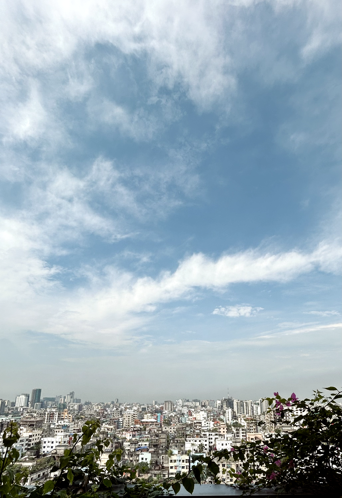

Predictive maintenance for a circular knitting machine
IoT-enabled condition monitoring with ESP32, sensors, a monitoring dashboard and analytical support using Python and MATLAB/Simulink.
Read the case study ↗Research & GIS
Research projects and publications grounded in engineering, energy, sensing and a growing interest in GIS for environment, infrastructure and urban systems.
Current academic direction
My EEE background has trained me to think in systems: inputs, signals, constraints, interactions and measurable performance. GIS adds the spatial dimension—where problems occur, who is affected and how infrastructure or environmental conditions vary across place.
I am developing this combined perspective for flood and drainage management, transport and infrastructure GIS, disaster-risk assessment, utility and asset management, urban development and environmental monitoring.


Research portfolio
No unrelated photographs are used to imply work that was not documented.
IoT-enabled condition monitoring with ESP32, sensors, a monitoring dashboard and analytical support using Python and MATLAB/Simulink.
Read the case study ↗Project lead for an AI-healthcare dataset using sensors and cameras. Responsibilities included planning, hardware setup and data-collection coordination.
Read the case study ↗Publications
Publication titles and venues are reproduced from the CV. Author-position and citation metrics are intentionally not invented.
International Journal of Applied Power Engineering (IJAPE)
Brunei International Conference on Engineering & Technology
IEEE Xplore
10th IEEE International Conference on Power Systems (ICPS)
IEEE Xplore
GIS portfolio roadmap
These are not presented as completed analyses. They define the evidence needed to strengthen the GIS side of the portfolio.
Susceptibility, drainage condition, exposure and decision-support mapping.

Network-based accessibility and service-coverage analysis.
Multi-criteria spatial assessment for resilient development.
A personal YouTube playlist is connected here. Playback starts only after you choose it.
Open YouTube playlist ↗